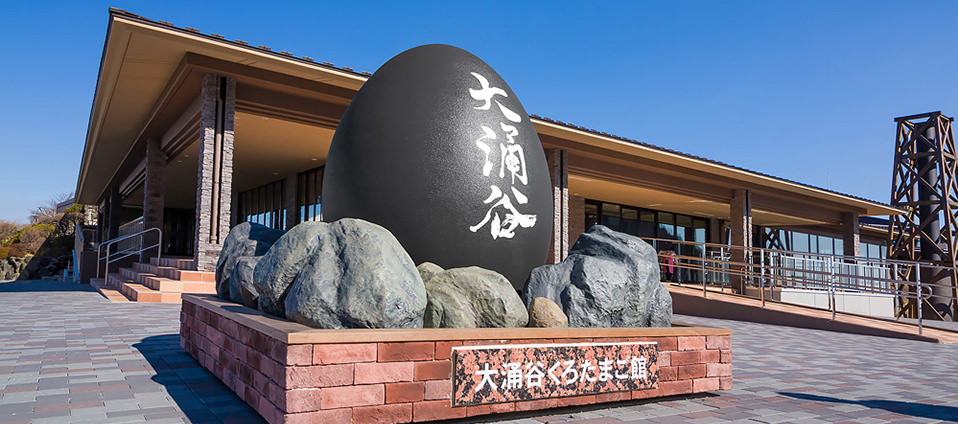
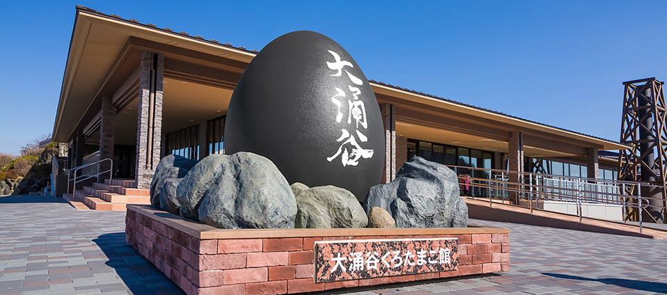
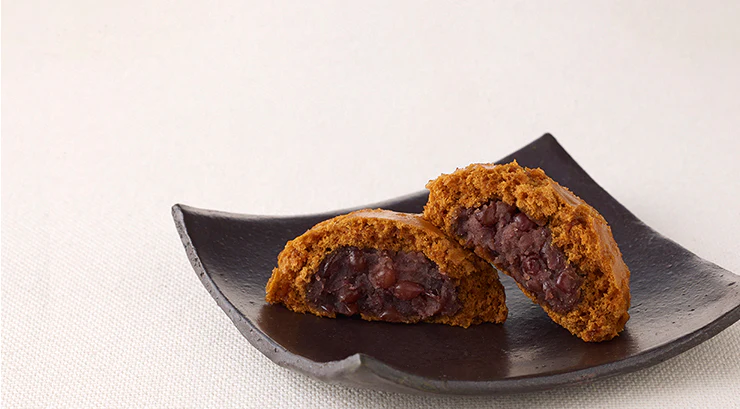
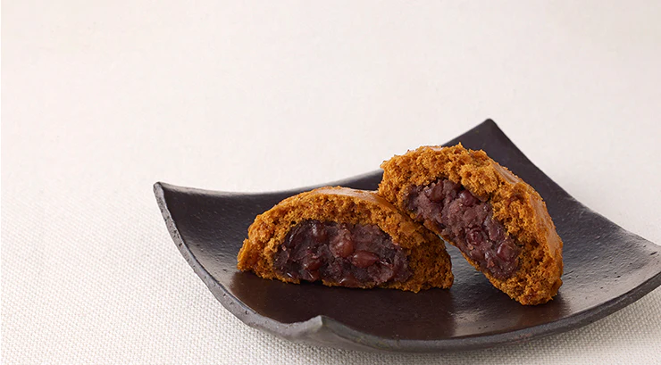
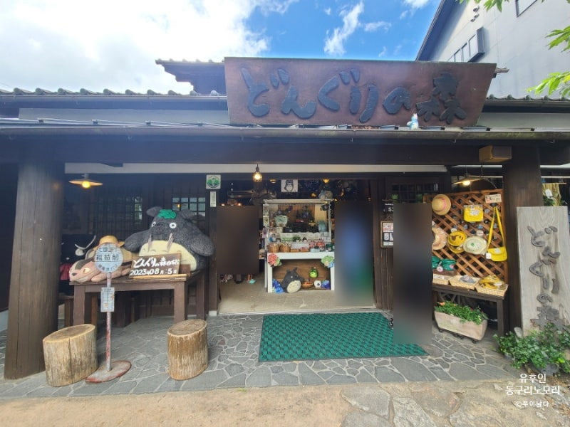
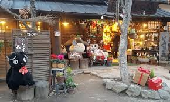
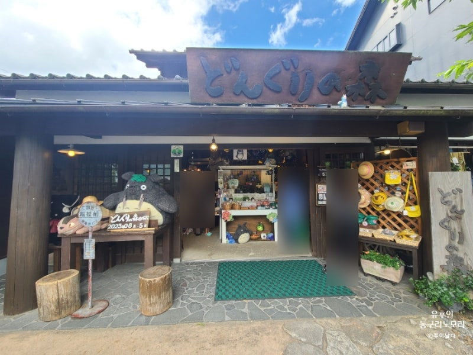
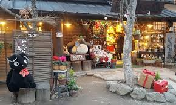
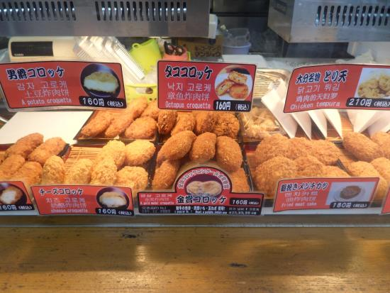
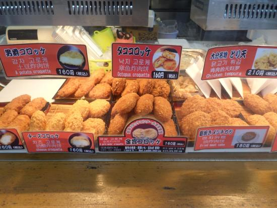

지역&온천
하코네는 도쿄와 가까워 교통이 편리한 관광지입니다.
하코네 산기슭에 위치해 봄에는 벚꽃과 어우러진 풍경을 즐길 수 있습니다.
하코네 이즈 국립공원 동쪽에 자리해 자연과 온천이 함께합니다.
하코네는 도쿄와 가까워 교통이 편리한 관광지입니다.
하코네 산기슭에 위치해 봄에는 벚꽃과 어우러진 풍경을 즐길 수 있습니다.
하코네 이즈 국립공원 동쪽에 자리해 자연과 온천이 함께합니다.
아시노코 호수 - 약 3100년 전 근처 산이 분화했을 때 생긴 호수로 분화로 생긴 호수로 하코네 신사와 유람선이 유명합니다.
오와쿠다니 - 유황 연기와 로프웨이로 즐기는 ‘지옥계곡’의 이색 경치.
연명지장존 - 장수와 자녀의 건강을 기원하는 신앙의 장소입니다.

 



← 드래그 해보세요 →
쿠로타마고(검은달걀) - 유황 온천수로 삶아 껍질이 검은 달걀, 오와쿠다니 명물.
온센만주(온천찐빵) - 유모토 온천 거리에서 맛볼 수 있는 달콤한 찐빵.

 



← 드래그 해보세요 →
구즈류 전설
옛날 아시호수에는 아홉 머리 용 ‘구즈류’가 사람들을 괴롭혔습니다.
수도승이 기도와 의식을 통해 용을 달래 수호신으로 만들었습니다.
그 후 구즈류는 아시호수를 지키는 신, 쿠즈류 미요진으로 숭배됩니다.
큐슈 오이타현의 작은 마을 유후인.
유후다케 산 아래 전원 풍경과 온천이 어우러진 힐링 여행지입니다.
노천탕에서 산과 들을 바라보며 여유로운 시간을 보낼 수 있습니다.
긴린코 호수 - 물안개와 석양에 반짝이는 풍경이 아름답습니다.
동구리 노모리 - 토토로, 키키 등 애니메이션 캐릭터와 만나는 기념품 숍.
거리산책 - 카페와 상점, 플로럴 빌리지에서 아기자기한 풍경을 즐길 수 있습니다.
 





← 드래그 해보세요 →
금상 고로케 - 유황 온천수로 삶아 검게 물든 감자와 고기를 튀겨낸 별미.
겉은 바삭, 속은 부드럽게 녹아 여행객들이 즐겨 찾습니다.
푸딩도라 - 도라야키와 푸딩을 합쳐 달콤하고 독특한 디저트를 만듭니다.


 

← 드래그 해보세요 →

우나기 히메 신사
옛날 이곳은 호수로 가득 차 사람들이 힘들게 살았습니다.
여신 ‘우나기히메’가 나타나 땅을 드러내 주었고, 사람들은 신사를 세워 경배했습니다.
사람들은 이 여신을 '우나기히메'라고 부르고 신사를 지어 경배를 하고있습니다.